In this article, we will look at how we can use GDB to perform runtime analysis of IOS applications. In the previous articles, we have looked at how we can use Cycript to analyze and manipulate the runtime behaviour of IOS applications. We have learnt how we can perform method swizzling and have our own methods being called instead of the original implementations. So why we do need GDB ? Well, what Cycript doesn’t allow us to do yet is set breakpoints and alter the values of variables and registers after a particular instruction. With GDB, we can dive deep into the application, observe the low level assembly instructions, manipulate the values in the registers and hence change the application flow completely.
For this demo, you can download the sample application GDB-Demo from my github account. Then make sure to install and run it on the device. If you don’t have a registered developer account to run this on your device, you can follow the instruction mentioned here. I would also recommend that you have a look at the previous article on GDB in this series before going ahead with this one. This application is just a single view application that prompts for a username/password combination to log you in. It then validates the credentials entered locally and logs you in if the username/password combination is correct.
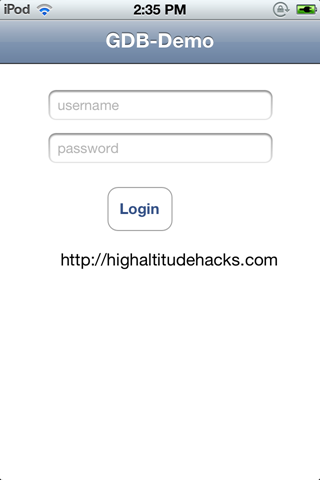
Once the application is installed on your device, ssh into it.
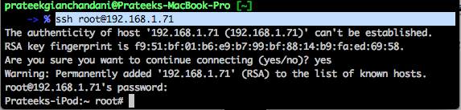
Then start the GDB-Demo application on your device. In GDB, attach to the running process by using the command attach GDB-Demo.PID. Here PID is the process ID of the GDB-Demo app. It can be different in your case. Just type attach GDB-Demo and hit TAB. This will give you the correct process along with its PID appended to it. Once you hit enter, GDB will hook into the running process.
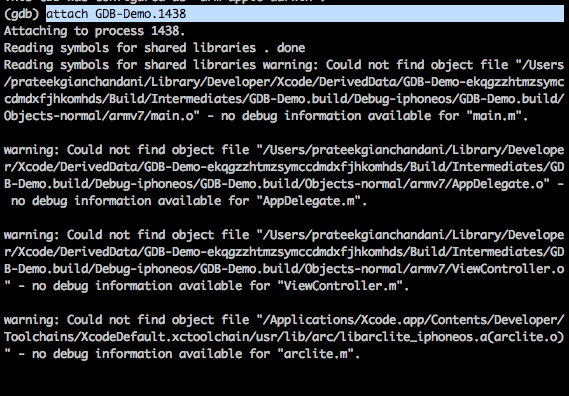
From the previous article, we already know about the class information about this app. We know it has a method named loginButtonTapped. So we set a breakpoint for it and press c to continue the application.
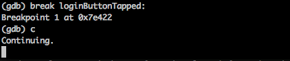
Now, lets enter any username/password combination and press Login. This will trigger the breakpoint.
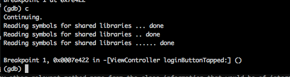
Use the disas to print the disassembly for this function. Now we know that the validation is happening inside this function as we couldn’t see any other relevant method name from the class information of this application that would be of interest.
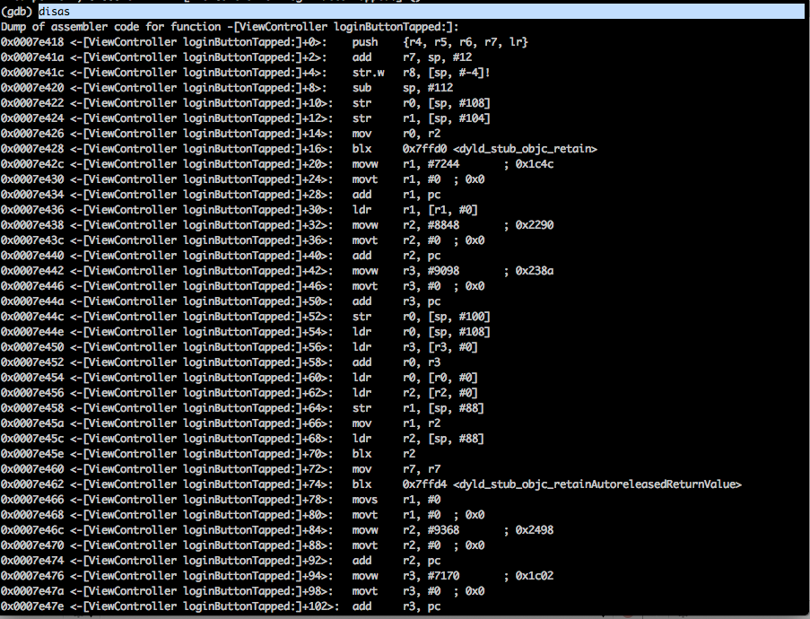
From the previous article, we also learnt that whenever an external method is called or a property is accessed, the objc_msgSend function is called. But there are thousands of objc_msgSend calls called in any application. We should only be concerned with the objc_msgSend calls related to this function. So we find out the addresses of all the instructions that call objc_msgSend and set a breakpoint for it. A very simple way to do it is to look for the blx instruction, note its address and set a breakpoint for it.
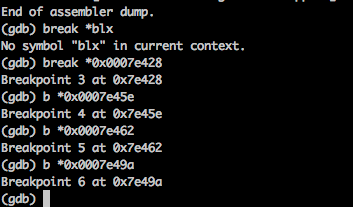
Alright, i have set the breakpoint for some of the coming objc_msgSend calls in this function. Now we move through every objc_msgSend instruction one by one, print out the registers and see if there is anything of interest. We are printing out the value of r1 with every objc_msgSend call here. Then if there is nothing of interest, we just type c to continue until the next breakpoint is hit.
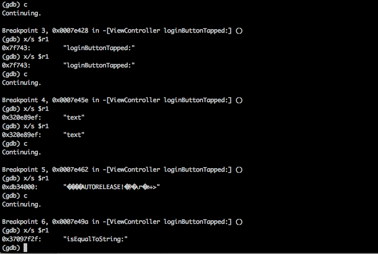
Ok, here is something of interest. If we look at the very bottom, we see that the method isEqualToString: gets called. Hence there is a comparison with a particular string. And from the knowledge gained in the previous articles we know that the r2 register will contain the argument to this function. Also, if you have some experience of writing Objective-C code, you will know that every object in Objective-C is a pointer. And this function isEqualToString: will also accept a string pointer as argment, which will be inside the r2 register. To find out the actual value of the object, GDB has a specific command pothat can print the value of the pointer contained in the register.
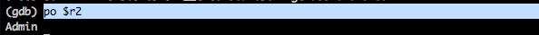
Ok, so the string being compared is Admin. This looks like the username. Looks like half the job is done. Optionally, you could also have printed out the value of r2 in this way.
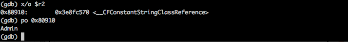
Now a wise thing to do here would be enter the username as Admin in the app again. This is because the flow may not reach a point where the password is being checked. So now lets enter the username as Admin and enter anything as password. Now lets sets the breakpoints again and see if we can figure out the password as well. After some time doing the same process, we hit another breakpoint where the method isEqualToString: is being called. On printing the value of r2, we can see that the password is HELLOIOSAPPLICATIONEXPERTS.
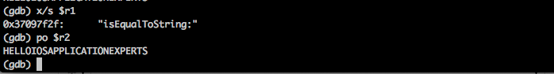
So now lets enter the username/password combination that we just found out and we can see that we will be authenticated.
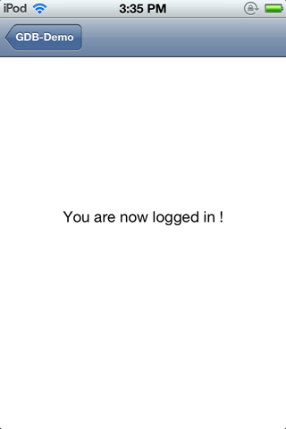
Another way to achieve the same thing would have been to manipulate the values in the registers. In the disassembly code, we can see that there are 2 cmp instructions.
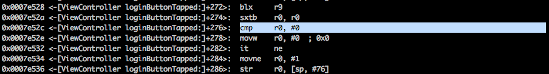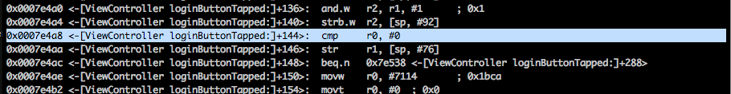
In both the cases, the value of the r0 register is checked against the value 0 and a decision is made after that. Lets set a breakpoint for both these instructions and continue the application.
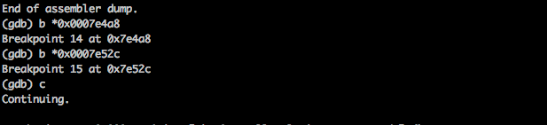
Once the breakpoint is hit, set the value of r0 register to 1. You can do this by using the command set $r0 = 1. Repeat this for the other breakpoint as well and continue the application. You will see that you are logged in again without even entering the correct username/password combination.
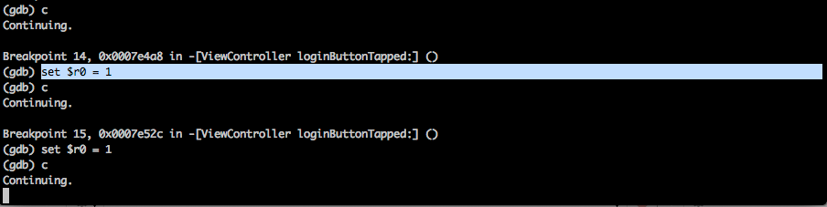
And BTW, here is the code for the function loginButtonTapped: that we just busted.
- (IBAction)loginButtonTapped:(id)sender {
if([_usernameTextField.text isEqualToString:@"Admin"] && [_passwordTextField.text isEqualToString:@"HELLOIOSAPPLICATIONEXPERTS"]){
[self performSegueWithIdentifier:@"adminPage" sender:self];
}else{
[[[UIAlertView alloc] initWithTitle:@"Error" message:@"Incorrect Username or password" delegate:nil cancelButtonTitle:@"Ok" otherButtonTitles:nil] show];
}
}
In this article, we looked at how we can use GDB to manipulate the application flow during runtime. Knowledege of GDB is beneficial specially in cases like these where the whole logic is contained inside one function and we cannot use method swizzling techniques using Cycript. With good knowledege of ARM assembly and GDB, the ability to modify the application behaviour and manipulate the application flow is just upto your imagination.